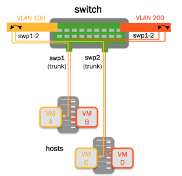
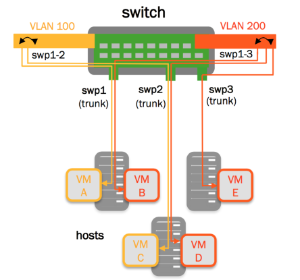
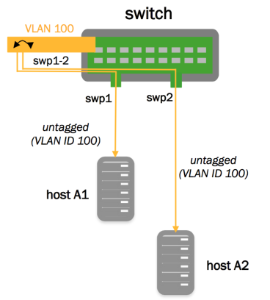

VLAN-aware Bridge Mode for Large-scale Layer 2 Environments
The Cumulus Linux bridge driver supports two configuration modes, one that is VLAN-aware, and one that follows a more traditional Linux bridge model.
For traditional Linux bridges, the kernel supports VLANs in the form of VLAN subinterfaces. Enabling bridging on multiple VLANs means configuring a bridge for each VLAN and, for each member port on a bridge, creating one or more VLAN subinterfaces out of that port. This mode poses scalability challenges in terms of configuration size as well as boot time and run time state management, when the number of ports times the number of VLANs becomes large.
The VLAN-aware mode in Cumulus Linux implements a configuration model for large-scale L2 environments, with one single instance of Spanning Tree. Each physical bridge member port is configured with the list of allowed VLANs as well as its port VLAN ID (either PVID or native VLAN — see below). MAC address learning, filtering and forwarding are VLAN-aware. This significantly reduces the configuration size, and eliminates the large overhead of managing the port/VLAN instances as subinterfaces, replacing them with lightweight VLAN bitmaps and state updates.
You can configure both VLAN-aware and traditional mode bridges on the same network in Cumulus Linux; however you should not have more than one VLAN-aware bridge on a given switch.
Contents
Configuring a VLAN-aware Bridge
VLAN-aware bridges can be configured with the Network Command Line Utility (NCLU). The example below shows the NCLU commands required to create a VLAN-aware bridge configured for STP, that contains two switch ports, and includes 3 VLANs — the tagged VLANs 100 and 200 and the untagged (native) VLAN of 1:
|
 |
cumulus@switch:~$ net add bridge bridge ports swp1-2 cumulus@switch:~$ net add bridge bridge vids 100,200 cumulus@switch:~$ net add bridge bridge pvid 1cumulus@switch:~$ net pendingcumulus@switch:~$ net commitcumulus@switch:~$ net show configuration files...auto bridgeiface bridge bridge-ports swp1 swp2 bridge-pvid 1 bridge-vids 100 200 bridge-vlan-aware yes... |
The following attributes are useful for configuring VLAN-aware bridges:
-
bridge-vlan-aware: Is automatically set to yes to indicate that the bridge is in VLAN-aware mode.
-
bridge-pvid: A PVID is the bridge's Primary VLAN Identifer. The PVID defaults to 1; specifying the PVID identifies that VLAN as the native VLAN.
-
bridge-vids: A VID is the VLAN Identifier, which declares the VLANs associated with this bridge.
-
bridge-access: Declares the physical switch port as an access port. Access ports ignore all tagged packets; put all untagged packets into the bridge-pvid.
-
bridge-allow-untagged: When set to no, it drops any untagged frames for a given switch port.
For a definitive list of bridge attributes, run ifquery --syntax-help and look for the entries under bridge, bridgevlan and mstpctl.
The bridge-pvid 1 is implied by default. You do not have to specify bridge-pvid. And while it does not hurt the configuration, it helps other users for readability.
The following configurations are identical to each other and the configuration above:
auto bridgeiface bridge bridge-ports swp1 swp2 bridge-vids 1 100 200 bridge-vlan-aware yes |
auto bridgeiface bridge bridge-ports swp1 swp2 bridge-pvid 1 bridge-vids 1 100 200 bridge-vlan-aware yes |
auto bridgeiface bridge bridge-ports swp1 swp2 bridge-vids 100 200 bridge-vlan-aware yes |
Do not try to bridge the management port, eth0, with any switch ports (like swp0, swp1, and so forth). For example, if you created a bridge with eth0 and swp1, it will not work properly and may disrupt access to the management interface.
Example Configurations
VLAN Filtering/VLAN Pruning
By default, the bridge port inherits the bridge VIDs. A port's configuration can override the bridge VIDs, by using the bridge-vids attribute:
|
 |
cumulus@switch:~$ net add bridge bridge ports swp1-3cumulus@switch:~$ net add bridge bridge vids 100,200cumulus@switch:~$ net add bridge bridge pvid 1cumulus@switch:~$ net add interface swp3 bridge vids 200cumulus@switch:~$ net pendingcumulus@switch:~$ net commitcumulus@switch:~$ net show configuration files...auto bridgeiface bridge bridge-ports swp1 swp2 swp3 bridge-pvid 1 bridge-vids 100 200 bridge-vlan-aware yes auto swp3iface swp3 bridge-vids 200 |
Untagged/Access Ports
Access ports ignore all tagged packets. In the configuration below, swp1 and swp2 are configured as access ports, while all untagged traffic goes to VLAN 100, as specified in the example below:
|
 |
cumulus@switch:~$ net add bridge bridge ports swp1-2cumulus@switch:~$ net add bridge bridge vids 100,200cumulus@switch:~$ net add bridge bridge pvid 1cumulus@switch:~$ net add interface swp1 bridge access 100cumulus@switch:~$ net add interface swp2 bridge access 100cumulus@switch:~$ net pendingcumulus@switch:~$ net commitcumulus@switch:~$ net show configuration files...auto bridgeiface bridge bridge-ports swp1 swp2 bridge-pvid 1 bridge-vids 100 200 bridge-vlan-aware yes auto swp1iface swp1 bridge-access 100 auto swp2iface swp2 bridge-access 100... |
Dropping Untagged Frames
With VLAN-aware bridge mode, a switch port can be configured to drop any untagged frames. To do this, add bridge-allow-untagged no to the switch port. This leaves the bridge port without a PVID and drops untagged packets.
Consider the following example bridge:
auto bridgeiface bridge bridge-ports swp1 swp2 bridge-pvid 1 bridge-vids 10 100 100 bridge-vlan-aware yesHere is the VLAN membership for that configuration:
cumulus@switch:~$ net show bridge vlanInterface VLAN Flags----------- ------ ---------------------swp1 1 PVID, Egress Untagged 100 200swp2 1 PVID, Egress Untagged 10 100 200bridge 10To configure swp2 to drop untagged frames, add bridge-allow-untagged no:
cumulus@switch:~$ net add interface swp2 bridge allow-untagged noWhen you check VLAN membership for that port, it shows that there is no untagged VLAN.
cumulus@switch:~$ net show bridge vlanInterface VLAN Flags----------- ------ ---------------------swp1 1 PVID, Egress Untagged 100 200swp2 10 100 200bridge 10VLAN Layer 3 Addressing — Switch Virtual Interfaces and Other VLAN Attributes
When configuring the VLAN attributes for the bridge, specify the attributes for each VLAN interface, each of which is named vlan<vlanid>. If you are configuring the SVI for the native VLAN, you must declare the native VLAN and specify its IP address. Specifying the IP address in the bridge stanza itself returns an error.
cumulus@switch:~$ net add vlan 100 ip address 192.168.10.1/24cumulus@switch:~$ net add vlan 100 ipv6 address 2001:db8::1/32cumulus@switch:~$ net pendingcumulus@switch:~$ net commitThese commands create the following configuration in the /etc/network/interfaces file:
auto bridgeiface bridge bridge-ports swp1 swp2 bridge-pvid 1 bridge-vids 10 100 200 bridge-vlan-aware yesauto vlan100iface vlan100 address 192.168.10.1/24 address 2001:db8::1/32 vlan-id 100 vlan-raw-device bridgeIn the above configuration, if your switch is configured for multicast routing, you do not need to specify bridge-igmp-querier-src, as there is no need for a static IGMP querier configuration on the switch. Otherwise, the static IGMP querier configuration helps to probe the hosts to refresh their IGMP reports.
You can specify a range of VLANs as well. For example:
cumulus@switch:~$ net add vlan 1-2000Configuring Multiple Ports in a Range
The bridge-ports attribute takes a range of numbers. The "swp1-52" in the example below indicates that swp1 through swp52 are part of the bridge, which is a shortcut that saves you from enumerating each port individually:
cumulus@switch:~$ net add bridge bridge ports swp1-52cumulus@switch:~$ net pendingcumulus@switch:~$ net commitThese commands create the following configuration in the /etc/network/interfaces file:
auto bridgeiface bridge bridge-ports swp1 swp2 swp3 ... swp51 swp52 bridge-vids 310 700 707 712 850 910 bridge-vlan-aware yesAccess Ports and Pruned VLANs
The following example configuration contains an access port and switch port that are pruned; they only sends and receive traffic tagged to/from a specific set of VLANs declared by the bridge-vids attribute. It also contains other switch ports that send and receive traffic from all the defined VLANs.
cumulus@switch:~$ net show configuration files...# ports swp3-swp48 are trunk ports which inherit vlans from the 'bridge'# ie vlans 310,700,707,712,850,910#auto bridgeiface bridge bridge-ports swp1 swp2 swp3 ... swp51 swp52 bridge-vids 310 700 707 712 850 910 bridge-vlan-aware yes auto swp1iface swp1 bridge-access 310 mstpctl-bpduguard yes mstpctl-portadminedge yes# The following is a trunk port that is "pruned".# native vlan is 1, but only .1q tags of 707, 712, 850 are# sent and received#auto swp2iface swp2 mstpctl-bpduguard yes mstpctl-portadminedge yes bridge-vids 707 712 850 # The following port is the trunk uplink and inherits all vlans# from 'bridge'; bridge assurance is enabled using 'portnetwork' attributeauto swp49iface swp49 mstpctl-portnetwork yes mstpctl-portpathcost 10# The following port is the trunk uplink and inherits all vlans# from 'bridge'; bridge assurance is enabled using 'portnetwork' attributeauto swp50iface swp50 mstpctl-portnetwork yes mstpctl-portpathcost 0...Large Bond Set Configuration
The configuration below demonstrates a VLAN-aware bridge with a large set of bonds. The bond configurations are generated from a Mako template.
cumulus@switch:~$ net show configuration files...## vlan-aware bridge with bonds example## uplink1, peerlink and downlink are bond interfaces.# 'bridge' is a vlan aware bridge with ports uplink1, peerlink# and downlink (swp2-20).# # native vlan is by default 1## 'bridge-vids' attribute is used to declare vlans.# 'bridge-pvid' attribute is used to specify native vlans if other than 1# 'bridge-access' attribute is used to declare access port# auto loiface loauto eth0iface eth0 inet dhcp# bond interfaceauto uplink1iface uplink1 bond-slaves swp32 bridge-vids 2000-2079# bond interfaceauto peerlinkiface peerlink bond-slaves swp30 swp31 bridge-vids 2000-2079 4094# bond interfaceauto downlinkiface downlink bond-slaves swp1 bridge-vids 2000-2079## Declare vlans for all swp ports# swp2-20 get vlans from 2004 to 2022.# The below uses mako templates to generate iface sections# with vlans for swp ports#%for port, vlanid in zip(range(2, 20), range(2004, 2022)) : auto swp${port} iface swp${port} bridge-vids ${vlanid}%endfor# svi vlan 2000auto bridge.2000iface bridge.2000 address 11.100.1.252/24# l2 attributes for vlan 2000auto bridge.2000vlan bridge.2000 bridge-igmp-querier-src 172.16.101.1## vlan-aware bridge#auto bridgeiface bridge bridge-ports uplink1 peerlink downlink swp1 swp2 swp49 swp50 bridge-vlan-aware yes# svi peerlink vlanauto peerlink.4094iface peerlink.4094 address 192.168.10.1/30 broadcast 192.168.10.3...VXLANs with VLAN-aware Bridges
Cumulus Linux supports using VXLANs with VLAN-aware bridge configuration. This provides improved scalability, as multiple VXLANs can be added to a single VLAN-aware bridge. A 1:1 association is used between the VXLAN VNI and the VLAN, using the bridge access VLAN definition on the VXLAN, and the VLAN membership definition on the local bridge member interfaces.
The configuration example below shows the differences between a VXLAN configured for traditional bridge mode and one configured for VLAN-aware mode. The configurations use head end replication (HER), along with the VLAN-aware bridge to map VLANs to VNIs.
The current tested scale limit for Cumulus Linux 3.2 is 512 VNIs.
cumulus@switch:~$ net show configuration files...auto loiface lo inet loopback address 10.35.0.10/32 auto bridgeiface bridge bridge-ports uplink regex vni.* bridge-pvid 1 bridge-vids 1-100 bridge-vlan-aware yesauto vni-10000iface vni-10000 alias CUSTOMER X VLAN 10 bridge-access 10 vxlan-id 10000 vxlan-local-tunnelip 10.35.0.10 vxlan-remoteip 10.35.0.34...Configuring a Static MAC Address Entry
You can add a static MAC address entry to the layer 2 table for an interface within the VLAN-aware bridge by running a command similar to the following:
cumulus@switch:~$ sudo bridge fdb add 12:34:56:12:34:56 dev swp1 vlan 150 master staticcumulus@switch:~$ sudo bridge fdb show44:38:39:00:00:7c dev swp1 master bridge permanent12:34:56:12:34:56 dev swp1 vlan 150 master bridge static44:38:39:00:00:7c dev swp1 self permanent12:12:12:12:12:12 dev swp1 self permanent12:34:12:34:12:34 dev swp1 self permanent12:34:56:12:34:56 dev swp1 self permanent12:34:12:34:12:34 dev bridge master bridge permanent44:38:39:00:00:7c dev bridge vlan 500 master bridge permanent12:12:12:12:12:12 dev bridge master bridge permanentCaveats and Errata
-
Spanning Tree Protocol (STP): VLAN-aware mode supports a single instance of STP across all VLANs, as STP is enabled on a per-bridge basis. A common practice when using a single STP instance for all VLANs is to define every VLAN on every switch in the spanning tree instance.
mstpd remains the user space protocol daemon.
Cumulus Linux supports Rapid Spanning Tree Protocol (RSTP).
-
IGMP Snooping: IGMP snooping and group membership are supported on a per-VLAN basis, though the IGMP snooping configuration (including enable/disable and mrouter ports) are defined on a per-bridge port basis.
-
Reserved VLAN range: For hardware data plane internal operations, the switching silicon requires VLANs for every physical port, Linux bridge, and layer 3 subinterface. Cumulus Linux reserves a range of 1000 VLANs by default; the reserved range is 3000-3999. The reserved range can be modified if it conflicts with any user-defined VLANs, as long the new range is a contiguous set of VLANs with IDs anywhere between 2 and 4094, and the minimum size of the range is 300 VLANs.
To configure the reserved range:
-
Open /etc/cumulus/switchd.conf in a text editor.
-
Uncomment the following line, specify a new range, and save the file:
resv_vlan_range -
Restart switchd to implement the change:
cumulus@switch:~$ sudo systemctl restart switchd.serviceWhile restarting switchd, all running ports will flap, and forwarding will be interrupted.
-
-
VLAN translation: A bridge in VLAN-aware mode cannot have VLAN translation enabled for it. Only traditional mode bridges can utilize VLAN translation.
-
Converting bridges between supported modes: Traditional mode bridges cannot be automatically converted to/from a VLAN-aware bridge. The original configuration must be deleted, and all member switch ports must be brought down, then a new bridge can be created.